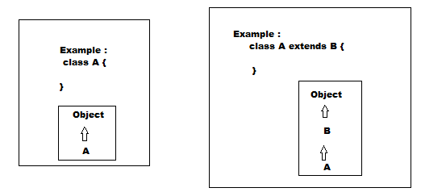
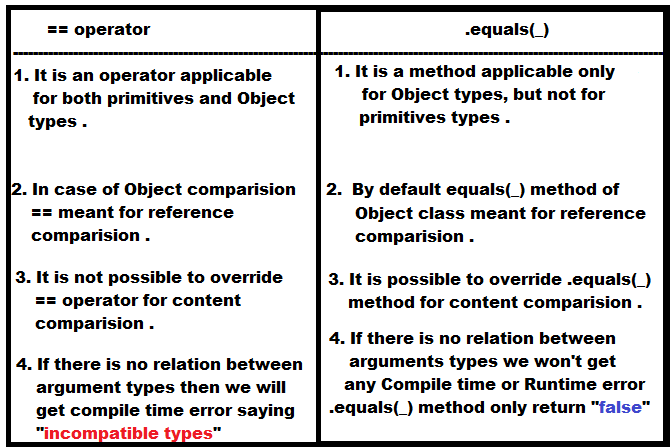

Object
Introduction
- For writing any java program, whether it is small or complex
,
but the most commonly required classes and interfaces are defined in a separate package
which is nothing but java.lang package .
- We are not required to import java.lang package explicitly because by default is available to every java program .
Object class :
- For all java classes whether it is predefined or customized the most commonly required methods are defined in Object class .
- SUN people define Object class as root for all java classes . So that its methods by default available to every java class through inheritance .
- Note 1: If our class doesn't extend any other class then only it is the direct child class of Object .
- Note 2: If our class extending any other class then it is the indirect child class of Object .

Object class defines the following 11 methods :
- public String toString()
- public native int hashCode()
- public boolean equals(Object o)
- protected native Object clone() throws CloneNotSupportedException
- protected void finalize() throws Throwable
- public final Class getClass()
- public final void wait() throws InterruptedException
- public final native void wait(long ms) throws InterruptedException
- public final void wait(long ms, int ns) throws InterruptedException
- public native final void notify()
- public native final void notifyAll()
toString()
- We can use toString() method to get String representation of an Object .
- Whenever we are trying to print any Object reference internally toString() method will be called .
- Student s = new Student();
System.out.println(s);
System.out.println(s.toString());
- If our class does not contain toString() method then Object class toString() method will be called .
- In the above example, Object class toString() method get executed which is implemented as follows.
- To return more meaningful String representation we can override toString() method in our class .
- Whenever we are trying to print Student reference to return his name and rollNo we have to override toString() method as follows .
- In String Class, StringBuffer class, all wrapper classes, all Collection classes toString() method is overridden for meaningful String representation .
- Hence it is highly recommended to override toString() method in our class also.
hashCode():-
- For every object JVM will generate a unique number which is nothing but HashCode .
- JVM will use hashCode while saving Objects into hashing related data structures like HashSet, Hashtable and HashMap .
- If the Objects are saved according to hashcode then the advantage is search operation become easy .
- If we are not overriding hashCode() method then Object class hashCode() method will be executed which will generate hashCode based on address of Object .
- If we override hashCode method then its no longer related to address of Object .
- It is highly recommended to override hashCode() method . So that we can customize order of elements in hashing related data structures .
- Overriding hashCode() method is said to be proper iff for every object we have to generate a unique no as hashCode .
- This is improper way of overriding hashCode() method because for all objects we are generating same hashCode .
- This is proper way of overriding hashCode() method because we are generating a unique no. as hashCode for every object.
toString() vs hashCode():-
- If we are giving the chance to Object class toString() method it internally calls hashCode() method .
- But if we are overriding toString() method it may not call hashCode() method .
equals(Object o):-
- We can use equals(-) method to check equality of two objects .
- If our class doesn't contain equals(-) method then Object class equals(-) method will be executed .
- In the above example, Object class equals(-) method got executed which is mean for Reference comparison(Address comparison) .
i.e, if two reference pointing to the same Object then only ".equals(-)" method returns true .
- Instead of reference comparison if we want content comparison, then we can override equals(-) method in our class .
- Whenever we are overriding equals(-) methods in our class we have to consider the following things .
- What is the meaning of content comparison ?
- If we pass different type of objects then our equals(-) method should return false, but not ClassCastException i.e
we have to handle ClassCastException to return false .
- If we pass null argument our .equals(-) method should return false, but not NullPointerException i.e
we have to handle NullPointerException to return false .
- The following is the valid way of overriding equals(-) method in Student class for Content comparison .
- In String class, all wrapper classes and all Collection classes equals(-) method is overridden for content comparison,
but in StringBuffer equals(-) method is not overridden for content comparison .
- In String class , .equals(-) method is already overridden for content comparison ,
Hence eventhough objects are different .equals(-) method return true, if the content is same .
- In StringBuffer class, .equals(-) method is not overridden for content comparison .
Hence Object class equals(-) method will be executed which is mean for reference comparison .
Due to this if Objects are different .equals(-) method return false eventhough content is same .
Comparison between == operator and .equals(-) method :-
- If two objects are equal by == operator then these objects are always equal by .equals(-) method .
- If two objects are not equal by == operator then we can not conclude anything about .equals(-) method, it may returns true or false .
- If object1.equals(object2) returns true then we can not conclude anything about '==' operator , it may return false or true .
- If object1.equals(object2) returns false then object1 == object2 is always return false .

Contract between .equals(_) method and hashCode() methods :-
- Two equivalent objects must have same hashCode i.e .
if object1.equals(object2) is true then object1.hashCode() == object2.hashCode() should be returns true .
- If two objects are not equal by .equals(_) method then there is no restriction on their hashCodes, may be same or may not be same .
- If hashCodes of two objects are equal then these objects may or may not equal by .equals(_) method .
- If hashCodes of two objects are not equals then these object are always not equal by .equals(_) method .
- To satisfy above contract between equals(_) method and hashCode() method whenever we are overriding equals(_) method compulsory we have to
override hashCode() method .
clone() :-
- The process of creating exact duplicate object is called Cloning .
- The main purpose of cloning is to maintain back up process .
- We can create cloned object by using clone() method of Object class .
- protected native Object clone() throws CloneNotSupportedException
- We can perform cloning only for Cloneable objects .
- An Object is said to be Cloneable if the corresponding class implements Cloneable interface .
- Cloneable interface present in java.lang package and it does not contain any methods . It is a Marker interface .
- If we are trying to perform cloning for non-cloneable objects then we will get RuntimeException saying : CloneNotSupportedException :
Shallow cloning :-
- The process of creating bitwise-copy of an object is called Shallow cloning .
- If the main object contains any primitive variables exact duplicate copy will be created in cloned object .
- If the main object contains any reference variable then the corresponding object won't be created, just reference variable will be created by pointing to old contained object .
- By using main object reference if we perform any change to the contained object then those changes will be reflected to cloned object .
- By default Object class clone() method meant for Shallow cloning .
- Shallow cloning is the best choice if the object contains only primitive values .
- In shallow cloning by using main object reference if we perform any change to the contained object , then those changes will be reflected
automatically to the cloned object also .
- To overcome this problem we should go for Deep cloning .
Deep cloning :-
- The process of creating exactly duplicate independent object (including contained object also) is called Deep cloning .
- In Deep cloning, if main object contains any reference variable then the corresponding object copy will be created in cloned object .
- Object class clone() method meant for Shallow cloning, if we want Deep cloning the programmer is responsible to implement by overriding clone() method .
- In deep cloning, by using main object reference if we perform any change to the contained object then those changes won't be reflected to the cloned object .
- Note 1: If the object contains only primitive variables , then Shallow cloning is the best choice .
- Note 2: If the Object contains reference variables then Deep Cloning is the best choice .
getClass():-
- This method returns runtime class definition of an object .
- Example : Student s = new Student();
System.out.println(s.getClass().getName());
finalize():-
- Just before destroying an object Garbage Collector always call finalize() method to perform clean up activities .
- Once finalize() method completes automatically Garbage Collector destroys that object .
wait(), notify(), notifyAll() methods :-
- Two threads can communicate with each other by using wait(), notify() and notifyAll() methods i.e, these methods meant for Interthread Communication .